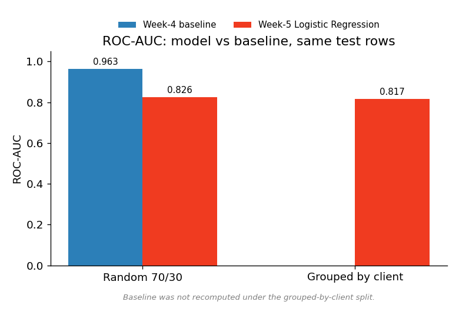
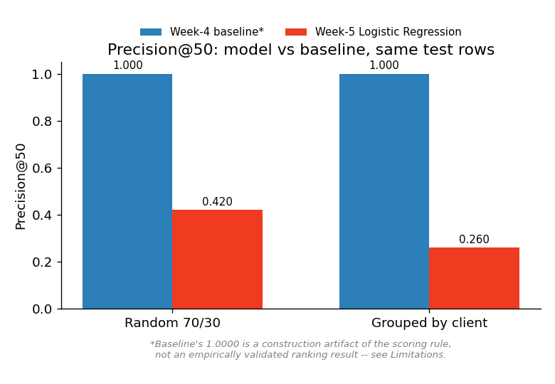
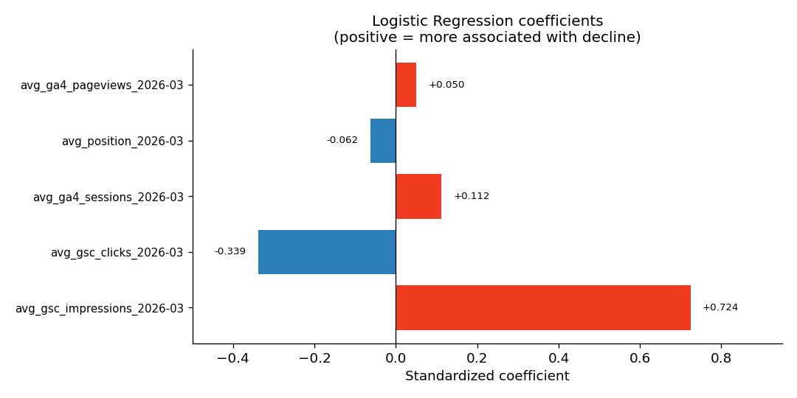
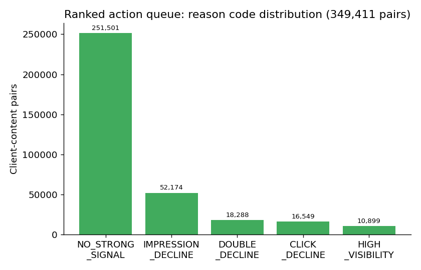

Abstract
Content teams managing large page inventories cannot manually review every page for a possible refresh — this work asks which pages should be reviewed first, using observable search and engagement signals from the FlyRank ML Internship warehouse. On a March-2026 development slice of 349,411 client–content pairs (a 9.97% base rate for a month-over-month click decline), we compare a five-signal rule-based baseline against a Logistic Regression model trained on the same five features, evaluated on both a random 70/30 split and a stricter client-grouped split. The baseline outperforms the model on every metric measured under both splits (ROC-AUC 0.9629 vs. 0.8259 random-split, 0.8174 grouped-split); a leakage audit found, however, that one of the five model features is directly involved in the label's own definition, so both results measure a same-window association rather than a genuine forecast — and the baseline's near-perfect Precision@50 turns out to be a mathematical artifact of its scoring rule, not an empirical win. The validated output is a ranked, reason-coded action queue covering all 349,411 pairs, intended to prioritize human editorial review rather than automate content decisions. We report this as a directional, decision-support signal, not a predictive or causal claim about refresh outcomes.
Introduction / Problem Statement
Content teams managing large inventories of published pages face a basic constraint: they cannot review every page for a possible refresh, so they need a way to decide which pages deserve attention first. This work addresses that decision directly: given a client's content inventory, which pages should be reviewed first for a possible refresh, based on observable search and engagement signals?
The unit of analysis is a single client–content pair — one page belonging to one client — observed across a given month. The output is a ranked list, one row per content item, carrying a score, a reason code explaining why the page was ranked where it was, and a recommended action drawn from a small fixed set (REVIEW_REFRESH, REVIEW, MONITOR, NO_ACTION). A client's content or SEO team uses this list as a starting point for manual review; the system does not make or publish any content decision on its own.
Two kinds of mistakes are possible, and they carry different costs. A false positive sends an editor to review a page that did not actually need attention — a bounded, recoverable cost of wasted time. A false negative skips a page that is genuinely losing search visibility, and that loss compounds the longer it goes unnoticed. Because the second failure mode is more expensive and harder to detect after the fact, this work treats recall and directional usefulness as at least as important as precision, and reports both honestly even where the results are not flattering.
Prioritization matters here specifically because the problem sits between two extremes. In the March-2026 development slice used throughout this work, 9.97% of client–content pairs show a month-over-month decline in average Search Console clicks. That is small enough that a “review everything” policy is unnecessary, but too large a population — tens of thousands of pages — to review by hand without some ranking. That gap is the condition under which a ranked queue earns its place over either a flat to-do list or no process at all.
Data
This work uses the fact_content_daily_performance table from the FlyRank ML Internship warehouse (hf://datasets/FlyRank/internship-warehouse), accessed via DuckDB over Hugging Face–hosted Parquet files. Each row represents one content item, for one client, on one reporting date; this grain was verified directly — a query for duplicate (client, content, date) combinations in the March-2026 slice returned zero rows.
The development window is February and March 2026, used together to build month-over-month features and a decline label. March 2026 alone contains 9,841,378 raw rows. Aggregated to one row per client–content pair with both months present, the development set used for baseline scoring, modeling, and validation contains 349,411 pairs.
Data coverage is uneven and worth stating plainly: of the 9,841,378 March rows, only 3,611,061 (36.7%) have Search Console data marked available, and only 413,966 (4.2%) have Analytics data marked available. The five features used throughout this work are only as informative as this coverage allows — content or clients without tracked Search Console or Analytics data are effectively invisible to this analysis, not scored as unremarkable.
Five features were used: average monthly GSC impressions, average monthly GSC clicks, average monthly GSC position, average monthly GA4 pageviews, and average monthly GA4 sessions, computed per client–content pair. Two categories of fields were deliberately excluded. Client and content identifiers were used only to group and de-duplicate rows, never as model inputs, so that no model could learn to memorize specific entities instead of a general signal. The decline label itself, along with any information from beyond the observation window, was excluded from the feature set — though Section 03 documents an important limitation to how cleanly that separation actually held in practice.
No client names, domains, URLs, or raw warehouse exports appear anywhere in this repository or in this paper; only hashed client and content identifiers are used, and only for grouping.
Methodology
Label
A client–content pair is labeled as declining (is_declining_label = 1) if its average March GSC clicks are lower than its average February GSC clicks, and not declining otherwise. Across the 349,411-pair development set, 34,837 pairs (9.97%) are labeled declining — the base rate against which every metric in this paper should be read.
Baseline
The baseline is a transparent, hand-written rule rather than a learned model. Two signals each contribute up to 40 points: a month-over-month GSC click decline and a month-over-month GSC impression decline, with full credit for a drop of −20% or worse and half credit for a milder decline. A 20-point visibility floor is added when a page still has at least 100 March impressions. The resulting 0–100 score maps onto the same four-way action scale described in the Introduction.
Model
The learned model is a Logistic Regression, chosen because the target is binary and the model produces an interpretable probability rather than an opaque score — a fair, simple comparison point for a hand-written rule. Features are median-imputed, standardized, and passed to a Logistic Regression classifier (max_iter=1000, random_state=42) inside a single pipeline, using the same five features described in Data.
Validation design
Two splits were used deliberately, not just one. A random 70/30 stratified split gives an initial development read, but allows content from the same client to appear in both training and test data, which can inflate apparent performance. A grouped-by-client split (scikit-learn's GroupShuffleSplit, zero client overlap between train and test, confirmed directly) gives a stricter measure of how the model performs on clients it has never seen. Both splits use random_state=42.
Leakage findings
Three separate leakage findings emerged over the course of this work, and all three are reported rather than only the most flattering one.
- An early deliberate test — adding a feature that directly copied the label — pushed ROC-AUC to a perfect 1.0000; removing that feature dropped ROC-AUC to 0.8061, confirming the leak-detection method before it was needed on real features.
- A later audit of the actual five-feature model found a real problem — see below.
- The same issue reappears in the baseline's own scoring rule — discussed in full in Results.
avg_gsc_clicks_2026-03, one of the five model features, is not independent of the label. Because the label is defined as March clicks below February clicks, March clicks are part of the label's own definition, not merely correlated with it. This means the model's headline numbers describe a same-window association, not a genuine past-to-future forecast.
| Feature | Concern |
|---|---|
| avg_gsc_impressions_2026-03 | Same window as the target, but not part of its definition. |
| avg_gsc_clicks_2026-03 | Directly used in the target definition (March clicks < February clicks). FLAGGED. |
| avg_position_2026-03 | Measured in the target window. |
| avg_ga4_pageviews_2026-03 | Measured in the target window. |
| avg_ga4_sessions_2026-03 | Measured in the target window. |
Table 1. Feature-by-feature leakage audit (Week 6).
Results (vs Baseline)
Both the baseline rule and the Logistic Regression model were evaluated on identical test rows, using identical metrics, under both the random and the grouped-by-client split.
| Split | Method | ROC-AUC | Accuracy | Precision | Recall | F1 | P@50 |
|---|---|---|---|---|---|---|---|
| Random 70/30 | Baseline (W4) | 0.9629 | 0.9574 | 0.9755 | 0.5878 | 0.7336 | 1.0000 |
| Random 70/30 | LogReg (W5) | 0.8259 | 0.8997 | 0.4716 | 0.0468 | 0.0851 | 0.4200 |
| Grouped by client | Baseline (W4) | — | — | — | — | — | 1.0000 |
| Grouped by client | LogReg (W5) | 0.8174 | 0.9211 | 0.3417 | 0.0139 | 0.0267 | 0.2600 |
Table 2. Model vs. baseline, same test rows, both splits. Base rate: 9.97% declining.
On every metric measured, under both splits, the hand-written baseline outperforms the learned model.

Precision@50 — the metric originally identified as this project's primary success criterion — tells a more nuanced story once its construction is examined closely.

The baseline's Precision@50 of 1.0000 under both splits is a direct, provable consequence of how the scoring rule is built, not evidence of good ranking. A pair can only reach the baseline's top score tier (≥80) through a nonzero click-decline contribution, and any nonzero click-decline contribution requires March clicks below February clicks — which is the label's own definition. Every pair scoring ≥80 is a true positive by construction; since 1,490 pairs reach the maximum score, the top 50 are guaranteed correct before ranking even begins.
The model's Precision@50 (0.4200 random split, 0.2600 grouped split) carries no such guarantee — it reflects an actual prediction from raw March-level features — and both figures clear the 9.97% base rate comfortably, even though neither approaches the baseline's inflated number.
A further check makes the same point from a different angle: at the default 0.5 probability threshold, the model's raw accuracy (89.97%, random split) is lower than simply always predicting “not declining” (90.03%) on the identical test rows. This does not contradict the model's ROC-AUC of 0.8259 — the model carries real, above-chance ranking signal — but it does mean accuracy and F1 are close to uninformative at this class balance, and that Precision@50 and ROC-AUC are the metrics that actually matter here.
Recall is the model's clearest weakness regardless of split: it misses 9,962 of 10,451 genuinely declining pairs under the random split (recall 0.0468), and an even larger share under the grouped split (recall 0.0139).

Feature coefficients show GSC impressions as the strongest signal associated with the model's predicted probability of decline, followed by GSC clicks in the opposite direction; GA4 sessions, average position, and GA4 pageviews contribute comparatively little.
Limitations & Honest Framing
At the default 0.5 threshold, the Logistic Regression model's raw accuracy (89.97%, random split) is below the trivial “always predict not-declining” baseline (90.03%) on the identical test set. This is not a contradiction of the model's ROC-AUC (0.8259) — the model does carry real ranking signal — but it means accuracy and F1 are not informative metrics for this 9.97% base-rate problem.
Main limitation — same-window leakage: the label is defined as “March clicks < February clicks,” and one of the five model features (avg_gsc_clicks_2026-03) is part of that same definition. This work is a same-window association measurement, not a past→future forecast. Both the model's ROC-AUC (0.8259 / 0.8174) and the baseline's near-perfect Precision@50 (1.0000, both splits) are inflated by this same root cause, expressed two different ways. Neither number should be read as “this system predicts future decline.”
Recall is low regardless of split. The model misses 9,962 of 10,451 true decliners under the random split (recall 0.0468), and misses an even larger share under the stricter grouped-by-client split (recall 0.0139). Whatever this system is used for, it cannot be the only filter.
Data coverage is partial. Only 36.7% of March rows have GSC data marked available and only 4.2% have GA4 data marked available. Pages or clients without tracked data are invisible to this model, not scored as “fine.”
The planned held-out month was never used. The Week-3 data contract explicitly reserved June 2026 as a sealed outcome month, specifically so a genuine past→future test could happen later. That test was never run. This work has not been validated against any month it wasn't developed on.
Five features, no content or context signals. The feature set carries no content age, content type, competitive/SERP context, or seasonality — all of which the FlyRank research paper itself flags as relevant to the freshness/refresh question. The model cannot distinguish a page that needs editorial attention from one that's just following a seasonal or algorithmic pattern.
What this work does not and cannot claim
- It does not establish that refreshing content improves search performance — no causal design, only observed association.
- It does not predict future decline — see the leakage finding above.
- It does not represent Google's ranking algorithm or any of its factors.
- It has not been tested on any month outside the March 2026 development window.
- It does not generalize beyond content types/clients with GSC and GA4 tracking in place.
The correct framing: on this development slice, Logistic Regression and the baseline rule both measure a same-window association between traffic signals and a click-decline label — useful as a directional, decision-support prioritization signal for human review, not as a validated forecasting system.
Ranked Recommendations
The ranked action queue covers all 349,411 client–content pairs, each with a score, a reason code, and one of four actions.
| Action | Count | Share |
|---|---|---|
| NO_ACTION | 251,501 | 72.0% |
| REVIEW | 53,575 | 15.3% |
| MONITOR | 23,348 | 6.7% |
| REVIEW_REFRESH | 20,987 | 6.0% |
Table 3. Ranked action queue: action distribution (349,411 pairs).

Note on consistency with Week 4: the underlying 0–100 score and the four score bands are identical to the Week-4 baseline notebook — the NO_ACTION count above (251,501) matches the Week-4 score = 0 count exactly. The reason-code wording differs slightly between the two notebooks: Week 4 required a decline of −20% or worse before assigning the decline codes, while Week 7 (used here) assigns those same codes to any decline below 0%, and adds a HIGH_VISIBILITY code Week 4 didn't have. The score and final action a page receives are unaffected — only the reason text a reviewer sees changes.
| Reason code | Recommended action |
|---|---|
| DOUBLE_DECLINE | Review for refresh; verify demand, SERP, and content relevance first. |
| CLICK_DECLINE | Review title/snippet, SERP position, and search intent before editing. |
| IMPRESSION_DECLINE | Review ranking, search demand, indexing, and technical visibility. |
| HIGH_VISIBILITY | Prioritize for monitoring because the page has meaningful visibility. |
| NO_STRONG_SIGNAL | Do not prioritize without another supporting signal. |
Table 4. Archetype → recommended action mapping.
Human review is required, not optional
This follows directly from the leakage finding in Methodology and Limitations. Before acting on any queued page, a reviewer should:
- Verify that the observed decline is not caused by a tracking or data-availability issue.
- Check whether search demand or seasonality explains the change.
- Inspect the current SERP position and search intent.
- Confirm the page is still relevant to its target query.
- Read the actual content before deciding whether a refresh is appropriate.
- Confirm the proposed change has a clear purpose.
- Record the final human decision and, where possible, the reason for accepting or rejecting it.
What this playbook must never automate
- Publish content changes
- Delete or redirect pages
- Rewrite titles or content without review
- Change search intent or canonical URLs
- Make technical SEO changes
- Declare a page successful or unsuccessful based only on the score
- Claim that a refresh caused an improvement without an appropriate follow-up evaluation
The score prioritizes human attention; it does not make content decisions.
Monitoring / retrain triggers
- The distribution of action scores changes substantially
- The proportion of REVIEW_REFRESH items changes unexpectedly
- Data availability or warehouse schemas change
- GSC or GA4 coverage changes
- The meaning of an input signal changes
- The sealed June 2026 month becomes available — the first real chance to test whether this queue actually predicted anything
Reproducibility
Every result in this paper traces to an executed notebook in this repository, under work/notebooks/: w01_research_question.ipynb, w02_ml_task_framing.ipynb, w03_data_contract.ipynb, w04_baseline_score.ipynb, w05_model.ipynb, w06_validation_audit.ipynb, w07_action_playbook.ipynb, and capstone.ipynb (which mirrors this paper's structure section-for-section). All random processes use random_state=42 throughout, applied consistently to both the train/test split and the model itself.
To reproduce: clone this repository, request access to the FlyRank internship warehouse dataset on Hugging Face, create a read-only access token, store it as a Colab secret named HF_TOKEN, and open any notebook via its Colab badge — each notebook re-clones the repository and reconnects to the warehouse independently, so any notebook can be run standalone. Figures embedded in this paper are generated in capstone.ipynb, Section 7, and saved to work/figures/.
Repository: github.com/MohamedElsayed75/FRW1NB1
Acknowledgments & Data Credit
This work is built on the FlyRank ML Internship dataset — flyrank.ai. Thanks to the FlyRank ML Internship program for the warehouse access, the structured weekly curriculum, and the standard this paper tries to hold itself to: observed, measured, directional, decision-support language throughout, no causal claims without a causal design, and no claim that goes further than what the evidence in this repository actually supports.